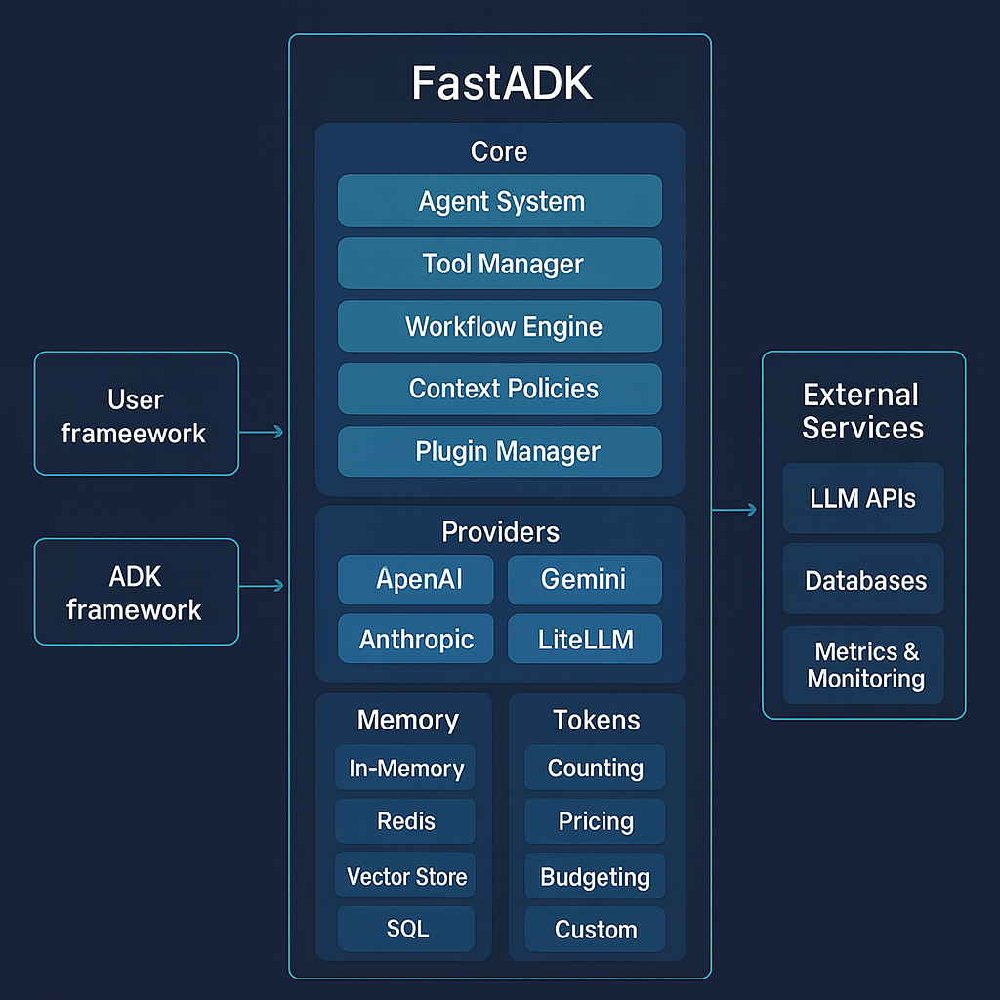

Understanding Agents¶
Agents are the core building blocks in FastADK. This guide explains what agents are, how they work, and best practices for designing them.
What is an Agent?¶
In FastADK, an agent is a Python class that:
- Is decorated with the
@Agentdecorator - Inherits from
BaseAgent - Contains one or more methods decorated with
@tool
Agents encapsulate a language model (LLM) along with tools it can use to perform tasks. The agent knows how to:
- Process user inputs
- Decide which tools to use
- Execute tools with appropriate parameters
- Return coherent responses based on tool results
Agent Architecture¶

An agent consists of several key components:
- Language Model: The underlying AI model (e.g., Gemini)
- Tools: Functions the agent can call to perform tasks
- Memory: Storage for conversation history and context
- Router: Logic for directing messages and responses
- Lifecycle Hooks: Methods called at different points in the agent's lifecycle
Creating an Agent¶
The simplest agent looks like this:
from fastadk.core import Agent, BaseAgent, tool
@Agent(model="gemini-2.0-pro")
class SimpleAgent(BaseAgent):
@tool
def hello(self, name: str) -> str:
"""Say hello to someone."""
return f"Hello, {name}!"
This agent can: - Parse user requests for greetings - Extract the name parameter - Return a formatted greeting
Agent Lifecycle¶
When an agent processes a message, it goes through several stages:
- Initialization: The agent is created and configured
- Message Reception: A user message is received
- Context Building: Current and past messages are formatted for the LLM
- LLM Reasoning: The LLM decides which tools to call and with what parameters
- Tool Execution: The specified tools are executed
- Response Generation: Results are formatted into a final response
- Memory Update: The conversation history is updated
You can hook into this lifecycle with methods like:
def on_initialize(self) -> None:
"""Called when the agent is first created."""
def on_message(self, message: str) -> None:
"""Called when a new message is received."""
def on_finish(self, result: Any) -> None:
"""Called after processing completes."""
Agent Types¶
FastADK supports three main agent archetypes:
1. Task-Completion Agents¶
Focused on completing specific tasks with structured inputs and outputs.
@Agent(model="gemini-2.0-pro")
class DocumentSummarizer(BaseAgent):
@tool
def summarize_text(self, text: str, max_length: int = 100) -> str:
"""Summarize text to specified maximum length."""
# Implementation
2. Tool-Using Agents¶
Capable of choosing from multiple tools to solve complex problems.
@Agent(model="gemini-2.0-pro")
class ResearchAssistant(BaseAgent):
@tool
def search_web(self, query: str) -> list:
"""Search the web for information."""
# Implementation
@tool
def read_document(self, url: str) -> str:
"""Extract text from a document."""
# Implementation
@tool
def summarize(self, text: str) -> str:
"""Summarize text."""
# Implementation
3. Conversational Agents¶
Maintain conversation state and respond naturally over multiple turns.
@Agent(
model="gemini-2.0-pro",
memory_backend="redis",
memory_ttl=86400 # 24 hours
)
class CustomerSupportAgent(BaseAgent):
@tool
def query_knowledge_base(self, query: str) -> str:
"""Look up information in the knowledge base."""
# Implementation
@tool
def get_customer_info(self, customer_id: str) -> dict:
"""Retrieve customer information."""
# Implementation
Agent Configuration¶
The @Agent decorator accepts many parameters to customize behavior:
@Agent(
model="gemini-2.0-pro",
description="A helpful assistant for answering questions",
temperature=0.7,
max_tokens=1024,
memory_backend="redis",
cache_enabled=True
)
Key configuration options include:
- Model selection: Different models have different capabilities
- Generation parameters: Control creativity, length, etc.
- Memory options: Choose storage backends and retention policies
- Caching: Enable caching for improved performance
Best Practices¶
Agent Design¶
- Single Responsibility: Each agent should have a clear, focused purpose
- Meaningful Tools: Design tools that perform concrete, useful actions
- Clear Documentation: Write clear docstrings for agents and tools
- Parameter Validation: Validate inputs to prevent errors
- Appropriate Scoping: Don't try to do too much in a single agent
Tool Implementation¶
- Atomic Functions: Each tool should do one thing well
- Strong Typing: Use type hints for all parameters and return values
- Descriptive Names: Use clear, action-oriented names for tools
- Error Handling: Implement robust error handling and recovery
- Retry Logic: Add retry mechanisms for flaky operations
Performance Optimization¶
- Caching: Cache expensive operations with appropriate TTLs
- Batch Processing: Combine operations where possible
- Efficient Context: Keep context concise and relevant
- Memory Management: Implement proper summarization and cleanup
- Async Operations: Use async for I/O-bound operations
Advanced Agent Patterns¶
Composition¶
Agents can use other agents as tools:
@Agent(model="gemini-2.0-pro")
class MetaAgent(BaseAgent):
def __init__(self):
super().__init__()
self.search_agent = SearchAgent()
self.analysis_agent = AnalysisAgent()
@tool
def research_topic(self, topic: str) -> dict:
"""Research a topic using multiple specialized agents."""
search_results = self.search_agent.run(f"Find information about {topic}")
analysis = self.analysis_agent.run(f"Analyze this information: {search_results}")
return {"search": search_results, "analysis": analysis}
Specialization¶
Create specialized agents for specific domains:
@Agent(
model="gemini-2.0-pro",
description="Medical diagnostic assistant with healthcare knowledge"
)
class MedicalAgent(BaseAgent):
# Medical-specific tools
Multi-modal¶
Agents that can process and generate different types of content:
@Agent(model="gemini-2.0-pro")
class ContentCreationAgent(BaseAgent):
@tool
def generate_image_prompt(self, description: str) -> str:
"""Generate a detailed prompt for image generation."""
# Implementation
@tool
def format_content(self, text: str, style: str) -> str:
"""Format content according to a specific style."""
# Implementation